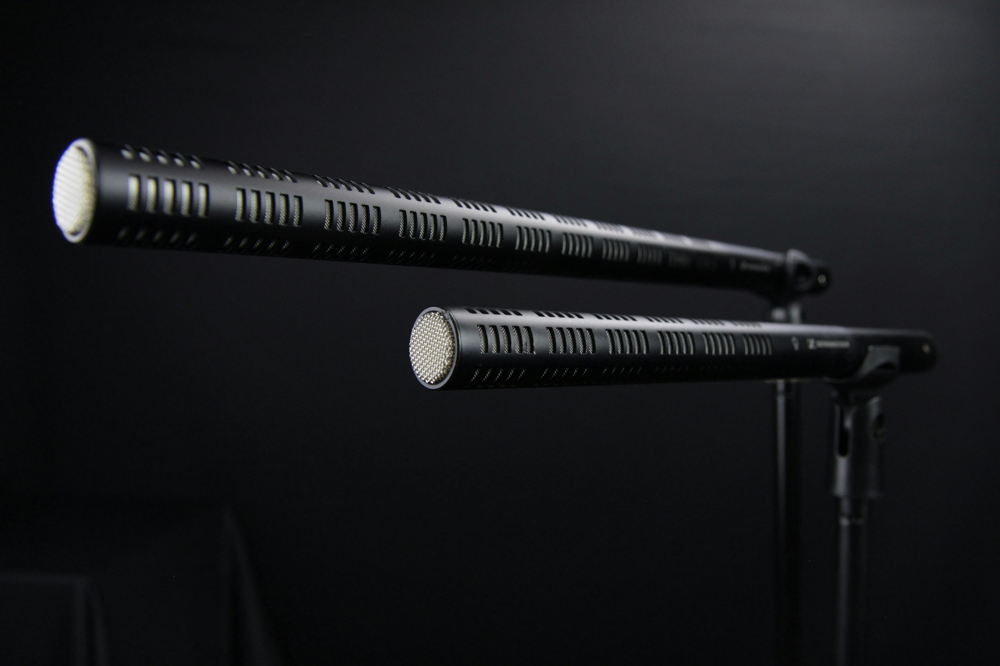

ADR (Automated Dialogue Replacement) is used when production dialogue can’t carry a line — because of noise, distance, performance pickups, story changes, or clarity requirements.
ADR support includes session prep, cueing workflows, recording coordination, editorial integration, and making the result feel seamless in the final mix. The goal is natural continuity: ADR should sound like it belongs in the scene.
Full workflow overview: Audio Post Production NYC.